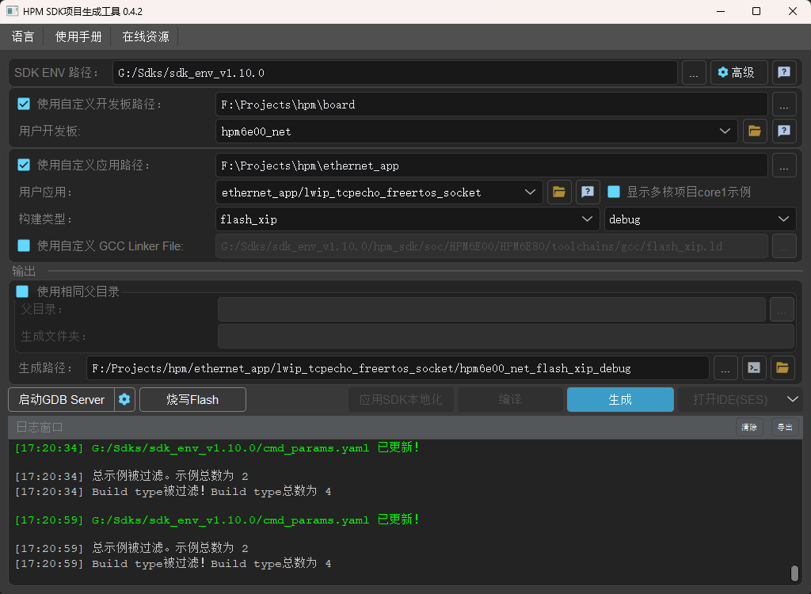

先楫HPM SDK代码本地化与VsCode开发
先楫HPM SDK代码本地化与VsCode开发
1. 总览
新建独立于SDK的工作目录
选取SDK中的示例项目, 复制到工作目录
选择接近项目的board文件夹, 复制到工作目录, 修改名称和配置
使用start_gui生产工程并进行测试
使用cmake管理工程, 修改CmakeLists.txt文件
代码本地化
2. 实操
2.1 创建工作目录
工作目录为 F:\Projects\hpm , 创建应用路径为 F:\Projects\hpm\ethernet_app
选取demo项目, 以 lwip_tcpecho_freertos_socket 为例, 复制 lwip_tcpecho_freertos_socket 和它的依赖文件夹
1 | |
可以看到此demo项目依赖的文件夹有 ports 和 common , 所以需要将这两个文件夹复制到应用路径下
2.2 选取board文件夹
在工作目录创建board文件夹, 选取接近项目的board文件夹, 我的板子为 HPM6E00EVK_RevB , 选择 hpm6e00evk 复制到 board 文件夹下
可以自定义修改文件夹名称, 这里修改为 hpm6e00_net , 同时文件夹内的 yml 文件也需要修改为和文件夹同名称
如果需要使用 openocd 进行调试, 需要复制对应的 openocd (hpm_sdk\boards\openocd\boards\xxx.yml) 配置文件到board目录下, 同时要改名为和上面的自定义名称相同
2.3 使用start_gui生产工程并进行测试
打开 start_gui.exe , 勾选 使用自定义开发板路径 并定位到 board 文件夹, 勾选 使用自定义应用路径 并定位到 ethernet_app 文件夹, 点击 生成 按钮

2.4 代码本地化
生成完毕应用后, 点击 应用SDK本地化 即可将SDK代码本地化到应用路径下, 从而脱离官方SDK的束缚
2.5 Cmake 与 VsCode开发
打开VsCode, Cmake选择应用目录下的 CMakeLists.txt 文件, 同时需要修改一点文件
在CmakeLists.txt文件中, 添加以下内容
1 | |
工具包选择未指定用来自动搜寻 (需要保证在环境变量中)
修改 .vscode.json 文件, 配置Cmake和Clangd
1 | |